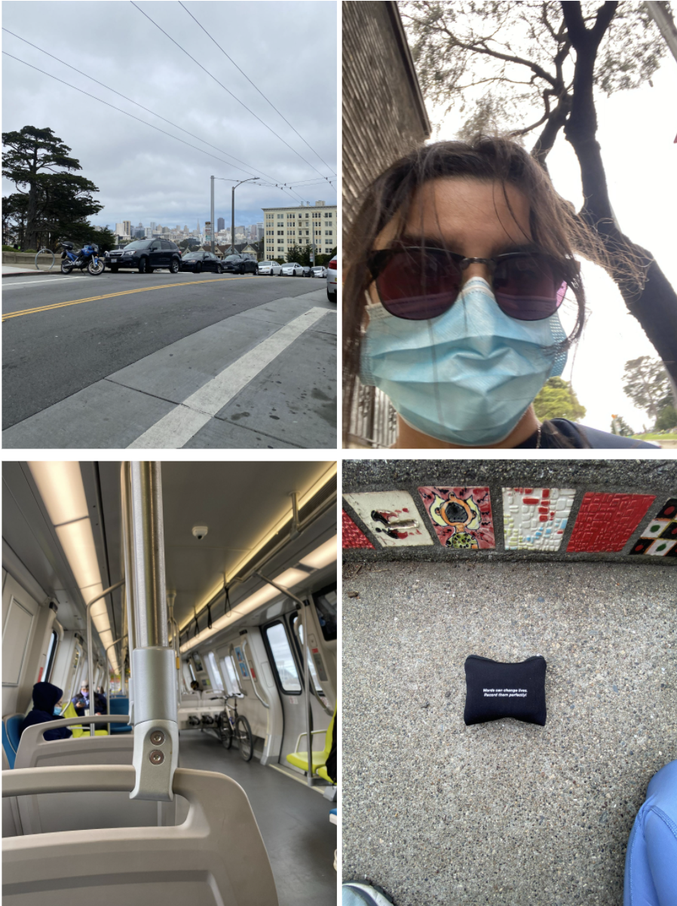

42 Careers - Probe
If life is meaningless, how do we spend our time here?


Show Notes
Essays/books/articles/speeches mentioned (in no particular order)
North Pole, South Pole, the Sea of Carcinoma - Dev Hathaway
The Pain Scale - Eula Biss
If Only: How to Turn Regret Into Opportunity - Neal Roese
If I knew then what I know now: Advice to my younger self - Robin Kowalski, Annie McCord
Utilitarianism - John Stewart Mill
Privacy? What Privacy? - Matthew Kielty
The Myth of Sisyphus - Albert Camus
Has Life Meaning? - Alan Watts
Other
History of Tipping in the United States - Rachel E. Greenspan
Princeton study on income levels and well-being - D. Kahneman, A. Deaton + recent
development in literature (counterargument) - M. Killingsworth
Restaurants
Early to Rise - San Francisco
Music
Se Dire Adieu - Debout Sur Le Zinc
Excusez Moi - Triciclo Circus Band
Dialogue De Sourds - Debout Sur Le Zinc
 Process Notes
Process Notes
I was really shooting in the dark for the majority of this piece’s making.
Someone told me that there are people out there living whatever your dream is, and it doesn’t hurt to talk to them.
So I sent out a bunch of caffeinated emails at midnight in my garage, got one response, and interviewed them the following week.
I thought well, gotta talk to more people now. So in what was essentially lunacy, or some type of chaotic good,
I hopped on an hour-long bart ride from Milpitas to Civic Center, walked an hour to Golden Gate Park, and interviewed 5 people.

(Clockwise starting top left): Ida B. Wells High,
phone-check-turned-accidental-selfie,
my lapel, Sunday morning bart.
I was afraid that after a year at home, my hermit-ness wouldn't allow me to form coherent sentences with strangers.
But talking to people is like riding a bike: you don’t forget. I accumulated another hour of tape, and then needed more.
I kept going up to, emailing, calling, and recording people for about a month. And when I thought I found a sufficient-enough answer, I stopped.
Putting the story together was, at its most basic, transcribing and scripting and
interviewing and recording my own part (pain) and more scripting.
Here are some sporadically-jotted down thoughts.
June 12, 2021
I’m totally lost. Is this what a forest is? A few minutes ago I wished this story would just make itself while I sleep,
like that one story with the dwarfs or rats or mice or whatever that made shoes while the actual shoemaker was asleep.
What was that story?
June 14, 2021
Weirdly, it’s coming together. I have no idea what I’m doing but it’s just making itself? It’s kinda fun.
...Why do the best interviews have the worst audio?
...Likes and ums and uhhs and errs and shhs and chchchs are fun to listen to.
It’s the you-knows that get me. I don't know.
June 26, 2021
I finished it yesterday. And by that I mean, I sent it to my editors.
Whenever a project ends, I feel like a part of myself dies with it... feels empty.
June 27, 2021

THIS IS NOT DONE AT ALL. LMAO BYE.
July 3, 2021
It’s objectively done... I think. Subjectively, it’ll probably never be done. But no part of me feels empty really
because I’m starting another project. You just do one thing and right before it's over, you
distract yourself with something else. And I think that’s life. God these damn life metaphors are getting me.
Ultimately, it put itself together. What got me through were Zadie Smith’s words (see above), Ira Glass’s words, my friend Elijah’s words (also see above), and a lot of the story's words.